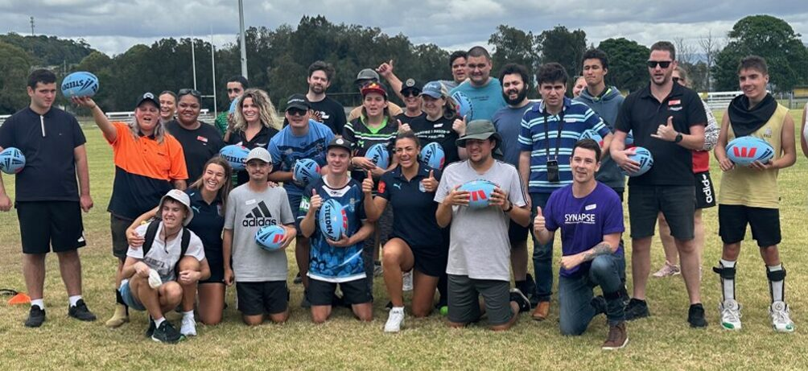

Welcome to Flagstaff’s Inclusive Sport program, aimed to support people of all abilities join sports groups as well as provide support to coaches, teams and clubs.
Sport brings people together. Whether you’re coaching, playing, volunteering, or cheering from the sideline—everyone should feel they belong.
Flagstaff’s Inclusive Sport online modules have been created to help community clubs, teams, and sporting groups across Australia open their doors wider. They are especially designed to support the inclusion of people with intellectual, cognitive, and hidden disabilities—like autism, ADHD, Down syndrome, and learning disabilities or even those with high anxiety.
You don’t need to be an expert to make your club more inclusive. You just need the right tools, knowledge, a bit of curiosity, and a willingness to learn and change what is needed within your club and team.
In these five modules you will find:
Each module speaks directly to a different part of your club—coaches, board members, volunteers, spectators, and players themselves. You can do one, or all five. Use what works best for your role, your team, and your environment.
These resources were developed with the input of people with disability, families, and sporting clubs, because inclusion is stronger when it’s codesigned and community driven.
These modules will ensure YOU understand the importance of being an inclusive club, to demonstrate thoughtfulness, care and inclusion in the local community.
Let’s make sure everyone Belongs and build clubs and communities where everyone can play, connect, and belong.
